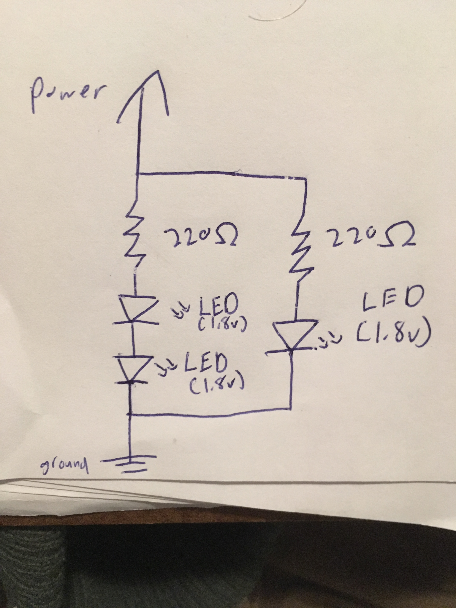
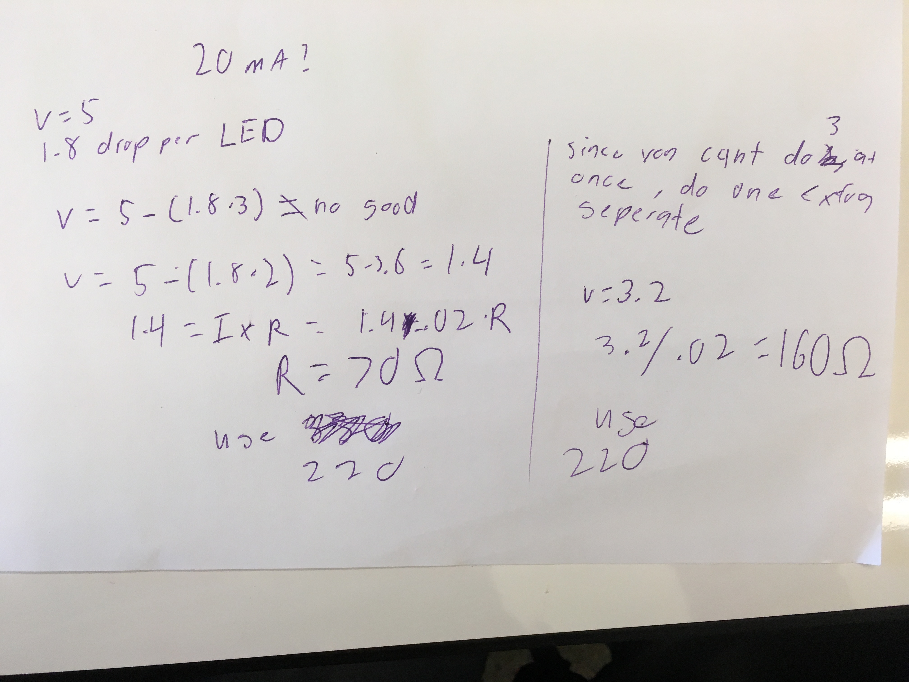
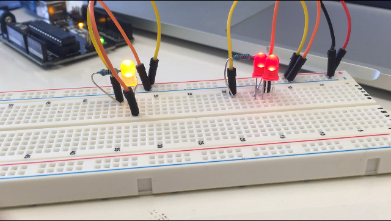

Tre's Assignment 1! Flashing Lights

As an introduction to using an Arduino, I used a breadboard and LEDs to make 3 lights blink.
Schematics and Circuitry
I originally wanted to run all three LEDs through one series, but because the arduino only outputs 5 volts, it made all the LEDs end up very dim because they were slated to pull 5.4 volts all together. So, I decided to run 2 Red LEDs in series and then a separate Yellow LED in parallel with the 2 Red LEDS.
Using Ohm's Law, I calculated the amount of resistance I would need for each circuit I would run in parallel. Both circuits needed less that 220 Ohms or resistance, which was the lowest type of resistor I had, so I used 2 220 Ohm resistors.
After connecting everything together properly, this is what my circuit looked like
Code and Final Operation
After this, I needed to make the LEDs blink using Arduino code. Luckily, LED blinking is given in the arduino IDE as an example, so i easily made the LEDs work after tinkering with the code a littler bit. I ended up with some small difference from the example:
/*
My Blink
Turns an LED on for one second, then off for one second, repeatedly.
This is mostly taken from the Arduino sample, but I changed the output pin and time between blinks
*/
// the setup function runs once when you press reset or power the board
void setup() {
pinMode(12, OUTPUT); // initialize digital pin 12 as an output.
}
// the loop function runs over and over again forever
void loop() {
digitalWrite(12, HIGH); // turn the LED on (HIGH is the voltage level)
delay(500); // wait half a second
digitalWrite(12, LOW); // turn the LED off by making the voltage LOW
delay(500); // wait half a second
}
Running this code through the arduino resulted in this beautiful, seasonal flashing light.